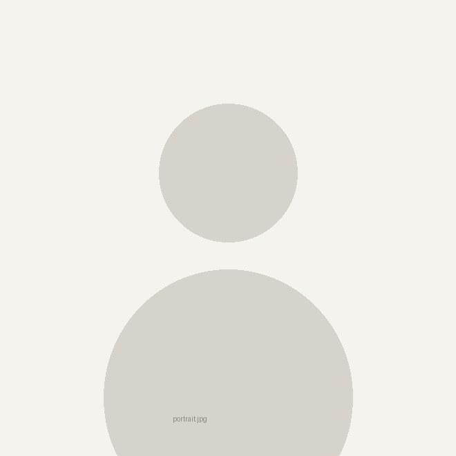

金于茗
I am a postdoctoral fellow at the Earth Research Institute, University of California, Santa Barbara, working with Tim DeVries. I am funded by the group Integration of Models and Observations across Scales (InMOS), part of the Ocean Biogeochemistry Virtual Institute (OBVI), supported by Schmidt Sciences.
Before UCSB I was an ASP Postdoctoral Fellow at the National Center for Atmospheric Research, collaborating with Britton B. Stephens. I completed my Ph.D. in Climate Sciences at the Scripps Institution of Oceanography, UC San Diego, advised by Ralph F. Keeling, and my B.S. in Environmental Sciences at Donghua University in Shanghai.
My research focuses on understanding the global carbon and oxygen cycles and their interactions with global climate change. I integrate observations collected in the atmosphere and the ocean with Earth System Models, and develop novel idealized models. The goal is to provide precise quantification of the flow of carbon and oxygen across the atmosphere, ocean, and land, and to investigate how climate change is reshaping these exchanges. For details, see Research.